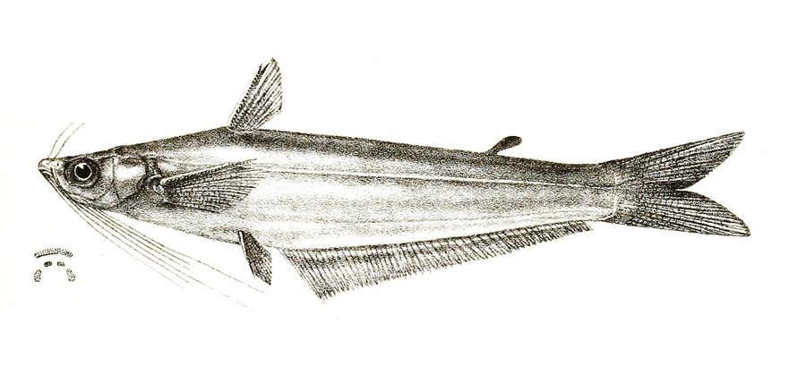

ताकरी कैटफिश मछलीTaakree Catfish
Proeutropiichthys taakree · Schilbeidae · FSH-0063

- Scientific name वैज्ञानिक नाम
- Proeutropiichthys taakree (Sykes, 1839)
- Family कुल
- Schilbeidae
- Hindi हिंदी
- ताकरी कैटफिश मछली
- Local names स्थानीय नाम
- taakree catfish, taakree machhli, takree, regi, schilbeid catfish
- Status here यहाँ की स्थिति
- native
- Movement आवागमन
- Resident, here all year
- Known from कहाँ दर्ज
- Others have published records from the wider Awadh–Purvanchal plain, none yet from Basti–Ayodhya अवध–पूर्वांचल से दूसरों के प्रकाशित अभिलेख, बस्ती–अयोध्या से अभी नहीं
- IUCN IUCN
- not evaluated
- Review समीक्षा
- not yet reviewed
When to look कब देखें
Present all year. साल भर मौजूद।
Uses and possibilities उपयोग और संभावनाएँ
Drawn from the documented uses in the profile below, where each is labelled traditional, current or a research lead. All uses →
Tell it apart from इनसे अलग पहचानें
ताकरी कैटफिश मछली / Taakree Catfish
Proeutropiichthys taakree (Sykes, 1839) — Schilbeidae
ताकरी कैटफिश मछली — बड़ी मैदानी नदियों, स्वच्छ धाराओं और गहरे तालों में पाई जाने वाली एक मध्यम आकार की, बहुत सुंदर और फुर्तीली देसी कैटफिश (ताकरी/रेगी) है। इसका शरीर बिना छिलके वाला, चिकना और दोनों तरफ से चपटा होता है। इसके मुँह पर आठ मूंछें होती हैं, पीठ पर एक नुकीला कांटेदार पंख और एक छोटा चर्बीदार पंख होता है, तथा पेट के नीचे एक बहुत लंबा पंख होता है। यह बहते पानी के बीच में तैरकर छोटी मछलियों और कीड़ों का शिकार करती है। खाने में यह बहुत स्वादिष्ट मानी जाती है।
Quick Identification त्वरित पहचान
| Feature | Description |
|---|---|
| Size | Medium-sized freshwater schilbeid; reaches about 42 cm TL (Froese & Pauly 2025) |
| Body Shape | Elongate, strongly compressed laterally, completely scaleless and streamlined (Sykes 1839) |
| Head & Mouth | Small head; mouth small, subterminal; lower jaw shorter than upper jaw (Talwar & Jhingran 1991) |
| Barbels | Eight barbels: two nasal, two long maxillary, and four mandibular barbels (Talwar & Jhingran 1991) |
| Colour | Silvery-green dorsally, glistening silvery-white on belly with a faint dark shoulder blotch (Talwar & Jhingran 1991) |
| Dorsal Fin | Positioned forward with a sharp, slender serrated spine; small adipose fin present (Sykes 1839) |
| Anal Fin | Remarkably long, carrying 43 to 52 branched rays (Talwar & Jhingran 1991) |
Field tip: Look in open, flowing glides of large rivers and major canals. A medium-sized, scaleless silvery catfish with eight barbels, a rayed dorsal fin armed with a sharp spine, a small adipose fin, and an elongate anal fin of 43–52 rays along the belly, is Proeutropiichthys taakree.
हिंदी: यह मध्यम आकार की चपटी और चिकनी कैटफिश है। इसके मुंह पर आठ मूंछें, पीठ पर कांटेदार पंख व छोटा चर्बीदार पंख और पेट के नीचे लंबा पंख होता है। शरीर चांदी जैसा चमकता है।
Morphology आकारिकी
Size as given by FishBase (Froese & Pauly 2025):
| Measurement | Range | Source |
|---|---|---|
| Maximum length | 42 cm TL | Froese & Pauly (2025), FishBase |
Adult description:
Proeutropiichthys taakree has an elongate, graceful, and strongly compressed body that tapers gradually towards the caudal peduncle (Sykes 1839). The dorsal profile rises slightly from the snout to the origin of the dorsal fin, while the ventral contour is gently curved (Talwar & Jhingran 1991). The head is small, conical, and compressed, comprising roughly one-fifth of the standard length (Talwar & Jhingran 1991). The snout is obtuse and rounded; eyes are moderately large, situated in the middle of the head length, and visible from both above and below (Sykes 1839). The mouth is small, transverse, and subterminal, with the upper jaw projecting slightly beyond the lower jaw (Talwar & Jhingran 1991). Teeth are villiform and arranged in narrow bands on the jaws and in two separate patches on the vomer (Jayaram 2006).
Eight barbels are present: two nasal barbels reaching beyond the eye; two long maxillary barbels extending to the pelvic fin base; and four mandibular barbels arranged in a transverse row across the chin, with the outer pair reaching the pectoral fin base (Talwar & Jhingran 1991).
The dorsal fin is situated well forward, armed with a slender, sharp osseous spine that is finely serrated on its posterior margin, accompanied by 6–7 branched rays (Talwar & Jhingran 1991). A small, well-defined adipose fin is present on the rear half of the back (Jayaram 2006). The pectoral fins have a strong spine armed with fine internal serrations. The anal fin is elongate, carrying 43 to 52 branched rays, running along the posterior half of the ventral profile (Talwar & Jhingran 1991). The caudal fin is deeply forked with equal pointed lobes (Sykes 1839).
Coloration is bright greenish-silver or olive-grey on the back, fading to lustrous silvery-white on the flanks and belly (Talwar & Jhingran 1991). A diffuse dark blotch is situated behind the operculum above the pectoral spine base (Sykes 1839). The fins are pale yellowish-grey and translucent, with the dorsal and caudal fin lobes often tipped with dusky margins (Talwar & Jhingran 1991).
हिंदी: इसका शरीर लगभग 42 सेमी तक लंबा, बहुत चपटा और बिना तराशों का होता है। पीठ पर कांटेदार पंख और उसके पीछे छोटा चर्बीदार पंख होता है। पेट के नीचे 43 से 52 किरणों वाला लंबा पंख होता है।
Behaviour & Ecology व्यवहार और पारिस्थितिकी
The Taakree Catfish is an active, pelagic schooling catfish adapted to open, flowing waters (Talwar & Jhingran 1991). It inhabits perennial rivers, large streams, and deep oxbow wetlands with continuous current, sandy or muddy bottoms, and reasonable water clarity.
Adults form loose schools that swim actively in the middle and upper water layers (Jayaram 2006). The strongly compressed, streamlined body profile enables the fish to maneuver effortlessly in river currents (Talwar & Jhingran 1991). Using their eight elongate barbels and well-developed lateral line system, they detect swimming prey and drifting organisms in the water column (Jayaram 2006). They hunt visually and tactilely, chasing small carplets, minnows, and freshwater prawns. During the high-water monsoon season, they move into inundated floodplain channels to feed and reproduce, returning to deep river pools as low-flow conditions return in winter (Talwar & Jhingran 1991).
हिंदी: यह मछली नदियों के बहते हुए पानी की बीच की परतों में झुंड बनाकर तैरती है। यह बहुत फुर्तीली होती है और अपनी आठ मूंछों की मदद से बहते पानी में छोटी मछलियों और कीड़ों का शिकार करती है।
Life Cycle / Phenology जीवन चक्र
Seasonal phenology in northern Indian alluvial river systems across the agricultural year (Talwar & Jhingran 1991; Jayaram 2006):
| Season / Month | Stage | Field Observation |
|---|---|---|
| June–July (Monsoon onset) | Upstream migration | Adults move into flooded river shallows and flowing tributary glides (Talwar & Jhingran 1991) |
| July–August (Kharif peak) | Spawning | Spawning takes place in open floodwaters over submerged sandbars (Jayaram 2006) |
| September–November (Post-monsoon) | Juvenile recruitment | Fry school in open water feeding on zooplankton blooms (Talwar & Jhingran 1991) |
| December–February (Rabi winter) | Deep pool retreat | Sub-adults and adults shelter in deep river scours and perennial pools |
| March–May (Summer / Zaid) | Active pelagic feeding | Heavy predation on minnows and insects as water warms (Jayaram 2006) |
Spawning takes place during the southwest monsoon from June to August (Talwar & Jhingran 1991). Strong monsoonal discharges and drops in water temperature stimulate reproductive readiness. Mating occurs in open, gently flowing shallows over coarse sand and submerged vegetation. Females shed hundreds of small, non-adhesive eggs that drift in the current before settling onto clean substrate. The eggs hatch after a few days into tiny transparent larvae that develop rapidly in nutrient-rich river shallows (Jayaram 2006).
हिंदी: बरसात के समय जब नदियों में नया पानी बढ़ता है, यह उथले पानी में जाकर अंडे देती है। कुछ दिनों में अंडों से बच्चे निकल आते हैं और वे तेजी से तैरते हुए बड़े होते हैं।
Diet and Feeding Behaviour आहार
Proeutropiichthys taakree is an active carnivorous predator and pelagic hunter (Talwar & Jhingran 1991):
Natural diet components:
- Small indigenous carplets and minnows, including Salmostoma bacaila (Large Razorbelly Minnow), Chela cachius (Silver Hatchet Chela), and Rasbora daniconius (Slender Rasbora).
- Freshwater prawns and shrimps (Macrobrachium spp.) seized in midwater (Jayaram 2006).
- Aquatic insects and larvae, including chironomid midges, caddisflies, and mayfly nymphs (Talwar & Jhingran 1991).
- Small terrestrial insects trapped in the surface film.
- Planktonic micro-crustaceans and rotifers filtered during juvenile life stages.
हिंदी: यह मांसाहारी मछली है जो छोटी मछलियों (जैसे चलवा और चेला), पानी के झींगों, जलीय कीड़ों और मच्छरों के लार्वा को खाती है।
Predators / Natural Enemies शत्रु
Documented natural predators in northern Indian alluvial freshwater systems:
- Riverine predatory fishes: Giant catfishes like Wallago attu (Striped Catfish) and Bagarius bagarius (Goonch), and Chitala chitala (Clown Knifefish) strike pelagic schools.
- Piscivorous birds: River terns, cormorants, and little egrets prey on schools in river shallows.
- Freshwater garfish: Xenentodon cancila (Freshwater Garfish) pursues juveniles in open shallows.
- River otters and softshell turtles: Hunt schools in perennial river reaches.
हिंदी: बोआल, गूंज, चितल और सुइया मछली पानी के नीचे से इस पर हमला करती हैं। बगुले और पनकौवे इसे पानी से झपट लेते हैं।
Agricultural / Human Relevance कृषि प्रासंगिकता
Nutritional and food value: The Taakree Catfish is a valued food fish across northern and central India. It is captured by commercial and artisanal fishers using cast nets, shore seines, and gill nets in major river systems like the Ghaghara and Kuwano. Its flesh is white, tender, sweet-tasting, and highly nutritious, supplying vital animal protein, calcium, phosphorus, and essential fatty acids to riverbank communities.
Ecosystem health role: As an active midwater predator, Proeutropiichthys taakree plays a vital role in regulating populations of small forage fishes and insect larvae in flowing river corridors (Talwar & Jhingran 1991).
Traditional: Consumed as an everyday fresh river fish by fishing communities in eastern Uttar Pradesh.
Today: Sold fresh in morning riverbank fish markets (haats) as a popular native food fish.
Research direction (a lead, not a result): Assessing the impact of river fragmentation by barrages on the genetic connectivity of Proeutropiichthys taakree populations.
हिंदी: यह एक बहुत स्वादिष्ट और पौष्टिक देसी मछली है जिसे ग्रामीण बाजारों में खूब पसंद किया जाता है। यह नदी के पारिस्थितिक संतुलन को बनाए रखने में महत्वपूर्ण भूमिका निभाती है।
Expected Locally स्थानीय रूप से अपेक्षित
Not a field record. Written from published accounts for eastern Uttar Pradesh. No confirmed local sighting yet — if you have seen it, that is what the atlas needs.
अभी तक स्थानीय पुष्टि नहीं। यह विवरण प्रकाशित स्रोतों से है, किसी अवलोकन से नहीं।
The Taakree Catfish is expected across eastern Uttar Pradesh in perennial rivers, large flowing streams, and connected oxbow lakes. Look in open, flowing shallows and deep river pools from August through January. GBIF holds published records from the wider Awadh–Purvanchal plain, none yet from Basti–Ayodhya. A voucher photograph showing the scaleless body, eight barbels, rayed dorsal spine, and long anal fin of 43–52 rays, submitted via the About page, would confirm the first local documentation for the project area.
Distribution वितरण
Global range: Native to the Indian subcontinent, recorded from India, Pakistan, Nepal, and Bangladesh (Talwar & Jhingran 1991).
In India: Found throughout the Indus, Ganges, Brahmaputra, Mahanadi, Godavari, and Krishna river drainages (Menon 1999).
In Uttar Pradesh: Recorded throughout the Ganges, Ghaghara, Rapti, and Gomti river networks and major canal systems.
In Basti district / eastern UP: Expected as a resident native species in the Ghaghara and Kuwano river channels and major oxbow wetlands.
हिंदी: यह भारत, पाकिस्तान, नेपाल और बांग्लादेश की नदियों में पाई जाती है। उत्तर प्रदेश में घाघरा और कुआनो नदी प्रणालियों में यह सामान्य रूप से उपस्थित है।
Research Questions शोध प्रश्न
- How do seasonal flow modifications downstream of irrigation barrages affect the school cohesion of Proeutropiichthys taakree? / बैराज से पानी रोके जाने पर इस मछली के झुंडों पर क्या असर पड़ता है?
- What are the specific dietary preferences of Proeutropiichthys taakree across pre-monsoon and post-monsoon months?
- What is the impact of destructive fine-mesh mosquito netting on wild fingerling recruitment in river shallows? / बारीक जालों से मछली पकड़ने का इसके बच्चों पर क्या असर होता है?
- Can captive induced breeding protocols be established to replenish riverine stocks impacted by river regulation?
- What are the critical dissolved oxygen thresholds for Proeutropiichthys taakree during dry-season river minimum flows?
Similar Species मिलती-जुलती प्रजातियाँ
| Species | How to tell apart | हिंदी | |
|---|---|---|---|
| Pachypterus atherinoides ([[indian_potasi\ | Indian Potasi]]) | Smaller in size; flanks marked with 3–4 distinct dark longitudinal stripes; anal fin has 33–46 rays | इंडियन पोटासी — छोटी होती है, शरीर पर तीन-चार धारियाँ होती हैं और पेट का पंख छोटा होता है |
| Ailia coila ([[gangetic_ailia\ | Gangetic Ailia]]) | Rayed dorsal fin completely absent; anal fin longer (58–75 rays); body more translucent | गैंगेटिक आइलिया — पीठ पर कांटेदार पंख बिल्कुल नहीं होता और पेट का पंख बहुत लंबा होता है |
| Ompok pabda ([[pabdah_catfish\ | Pabdah Catfish]]) | Possesses only 4 barbels; lacks adipose fin; lower jaw projects strongly | पाबदा कैटफिश — केवल चार मूंछें होती हैं, चर्बी का पंख नहीं होता और निचला जबड़ा आगे निकला होता है |
Field rule: A medium-sized, scaleless silvery schilbeid catfish with eight barbels, a rayed dorsal fin armed with a sharp spine, a small adipose fin, and an anal fin of 43–52 rays, is Proeutropiichthys taakree.
हिंदी: गैंगेटिक आइलिया की पीठ पर पंख नहीं होता और इंडियन पोटासी के शरीर पर धारियाँ होती हैं, जबकि ताकरी कैटफिश की पीठ पर कांटेदार पंख होता है और पेट के नीचे 43 से 52 किरणों वाला लंबा पंख होता है।
Taxonomy & Classification वर्गीकरण
Original description. Described by William Henry Sykes in 1839 as Hypophthalmus taakree in Proceedings of the Zoological Society of London, Volume 6, page 163. Type locality: Beema river, Maharashtra, India.
Subspecies. Monotypic — no subspecies are recognized across its continental range.
Family and order placement. Order Siluriformes, family Schilbeidae. The genus Proeutropiichthys Hora, 1937, comprises medium-sized pelagic Asian schilbeids.
Phylogenetic notes. Proeutropiichthys taakree is the type species of the genus Proeutropiichthys. It is distinguished from allied genera by its subterminal mouth, 8 barbels, and distinct anal fin ray count (Talwar & Jhingran 1991).
IUCN status rationale. Not evaluated (NE) on the global IUCN Red List of Threatened Species. It maintains widespread populations in major river basins, though wild stocks face pressure from river fragmentation.
हिंदी: इसका वैज्ञानिक नाम Proeutropiichthys taakree है और यह Schilbeidae परिवार की सदस्य है। प्रकृति में इसका वास नदियों में स्थित है।
Photo Gallery फोटो गैलरी
No photos yet — add field photos to media/species/taakree_catfish/ and run node scripts/sync_photos.js.
Photos needed आवश्यक फोटो
- [ ] Lateral view of adult specimen showing silvery flanks and long anal fin (चपटे शरीर और पेट के लंबे पंख की पूरी तस्वीर)
- [ ] Close-up of head showing the eight barbels and subterminal mouth (सिर और आठ मूंछों का स्पष्ट दृश्य)
- [ ] View of dorsal fin spine and adipose fin (पीठ के कांटेदार पंख और चर्बीदार पंख का दृश्य)
- [ ] Freshly collected specimen from a river landing site (नदी से ताजा पकड़ी गई मछली)
References संदर्भ
- Sykes, W. H. (1839). On the fishes of the Deccan. Proceedings of the Zoological Society of London, 6: 157–165 [p. 163].
- Talwar, P. K. & Jhingran, A. G. (1991). Inland Fishes of India and Adjacent Territories, Vol. 2. Oxford & IBH Publishing Co., New Delhi, pp. 612–613.
- Menon, A. G. K. (1999). Check list - fresh water fishes of India. Records of the Zoological Survey of India, Occasional Paper No. 175, p. 238.
- Jayaram, K. C. (2006). Catfishes of India. Narendera Publishing House, Delhi, pp. 128–130.
- Froese, R. & Pauly, D. (Eds.) (2025). FishBase. World Wide Web electronic publication.
- GBIF Occurrence Data — Proeutropiichthys taakree, India (2025).
Source file: species/fauna/fish/taakree_catfish.md